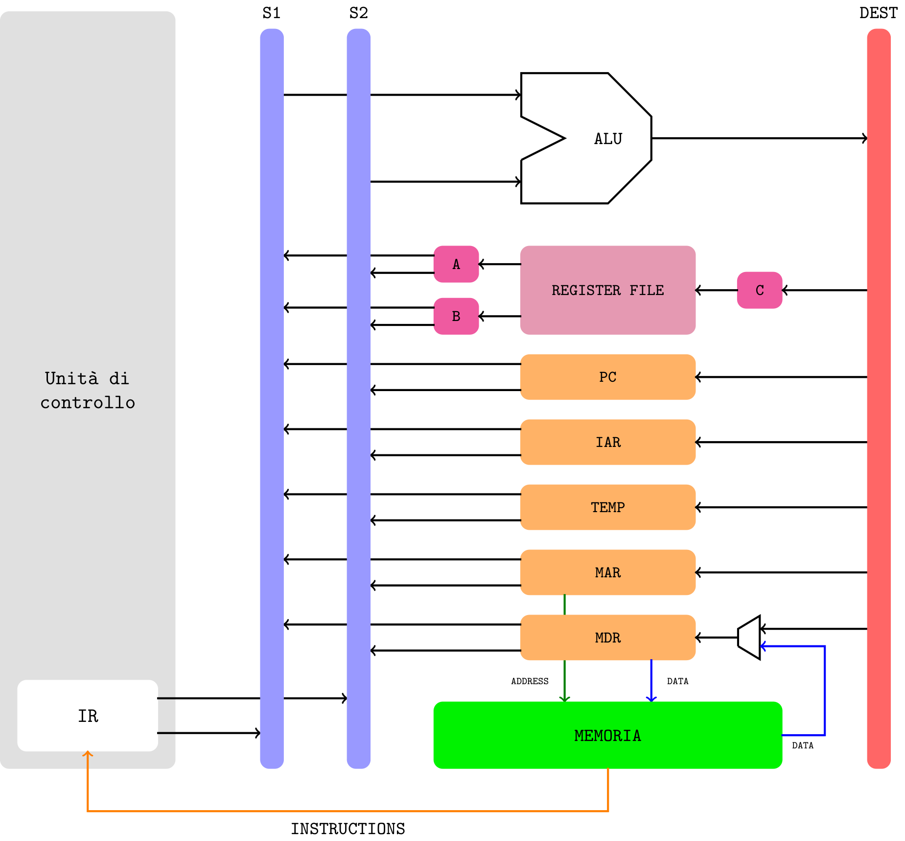
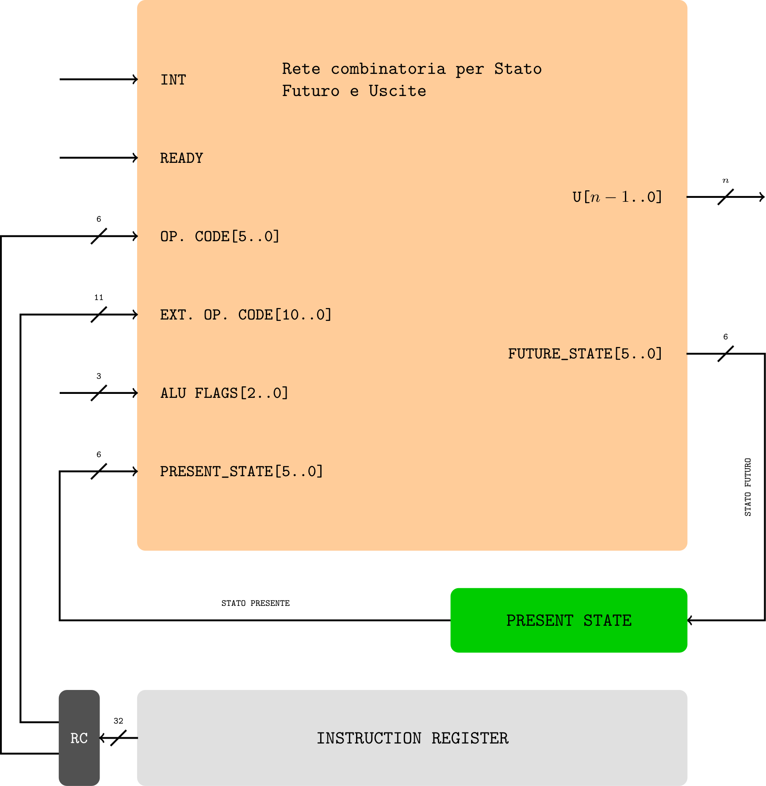
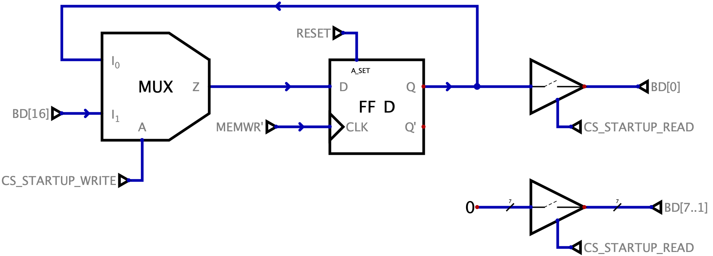

Definizione - Problemi di comunicazione gestita con buffer
Fino a questo momento, abbiamo considerato che la CPU gestisca la comunicazione con qualsiasi periferica esterna e che sia utilizzato come tramite un buffer. Tale metodologia comporta tuttavia alcune problematiche, ad esempio
- nessuno garantisce (alla CPU) che la periferica esterna abbia scritto nel buffer, rendendo quindi necessario un continuo controllo dei dati sul buffer (cosa a cui è possibile porre rimedio implementando un segnale di interrupt);
- nella fase di lettura (della CPU) nessuno garantisce (alla periferica) che la CPU abbia letto le informazioni nel buffer (informazione utile per evitare di sovrascrivere informazioni che andrebbero perse) e, analogamente, nessuno garantisce che la periferica abbia letto il dato nella fase di scrittura (della CPU).
Definizione - Protocollo handshake - Porta per input
L'utilizzo del protocollo handshake in input necessita, oltre che entrambi i dispositivi rispettino le temporizzazioni, un dispositivo di interfaccia, ovvero una "porta".  Realizzazione Realizzare la rete logica che ha questo comportamento risulta essere particolarmente complicato, in quanto è necessario gestire diversi fronti di salita e di discesa contemporaneamente. Una realizzazione classica porterebbe infatti a clock gating (causato dalla presenza di gate sul clock) o alla necessità di utilizzare segnali asincroni, scelta non felice.
Realizzazione Realizzare la rete logica che ha questo comportamento risulta essere particolarmente complicato, in quanto è necessario gestire diversi fronti di salita e di discesa contemporaneamente. Una realizzazione classica porterebbe infatti a clock gating (causato dalla presenza di gate sul clock) o alla necessità di utilizzare segnali asincroni, scelta non felice.
Una metodologia per realizzare ciò, è riconoscere i diversi fronti di salita e discesa dato che: Si avrà quindi che: 
Il flusso del funzionamento di tale porta può essere suddiviso in fasi:
- una fase di "quiete", in cui il buffer interno alla porta non contiene alcun dato interessante. In questa fase il segnale IBF (Input Buffer Full) asserito dalla portà avrà valore 0;
- una fase di scrittura da parte dell'unità esterna nella porta (possibile solo se il buffer è "vuoto", ovvero IBF = 0) segnata dall'asserzione del segnale STB (Strobe). Al fronte di salita di STB (ovvero nel momento in cui l'unità esterna sta "esprimendo la volontà" di voler scrivere il dato nel buffer), si ha che sarà asserito anche IBF = 1 (per indicare la presenza di dati);
- terminata la scrittura del dato nel buffer (al fronte di discesa di STB), la porta dovrà segnalare la presenza di un nuovo dato interno al buffer, asserendo quindi il segnale INT_R (Interrupt Request);
- tale richiesta di interrupt rimarrà a valore alto fino a che non inizierà la lettura di questo dato (ovvero al fronte di salita di RD);
- una volta terminata la lettura (al fronte di discesa di RD) si avrà che il buffer interno sarà vuoto, segnalando quindi IBF = 0.
Una metodologia per realizzare ciò, è riconoscere i diversi fronti di salita e discesa dato che:
- il segnale IBF dovrà avere valore 1 al fronte di salita di STB e valore 0 al fronte di discesa di RD;
- il segnale INT_R dovrà avere valore 1 al fronte di discesa di STB e valore 0 al fronte di salita di RD.
In questo modo, tuttavia, si ha che alla fine di ogni "ciclo", i segnali logici rimangono tutti a livello "alto": è possibile ora però ragionare con logica negata per effettuare le relative attivazioni.

- il segnale IBF dovrà essere attivo al fronte di salita di STB ed essere attivo basso al fronte di discesa di RDIBF = STBSALITA · RDDISCESA' + STBSALITA' · RDDISCESAin quanto è necessario discriminare anche durante al secondo "ciclo" di lettura (in cui i segnali sono negati);
- il segnale INT_R dovrà essere attivo al fronte di discesa di STB ed essere attivo basso al fronte di salita di RDINT_R = STBDISCESA · RDSALITA' + STBDISCESA' · RDSALITAin quanto è necessario discriminare anche durante al secondo "ciclo" di lettura (in cui i segnali sono negati);
Definizione - Protocollo handshake - Porta per output
L'utilizzo del protocollo handshake in output necessita, oltre che entrambi i dispositivi rispettino le temporizzazioni, un dispositivo di interfaccia, ovvero una "porta".  Il flusso del funzionamento di tale porta può essere suddiviso in fasi: Realizzazione Realizzare la rete logica che ha questo comportamento risulta essere particolarmente complicato, in quanto è necessario gestire diversi fronti di salita e di discesa contemporaneamente. Una realizzazione classica porterebbe infatti a clock gating (causato dalla presenza di gate sul clock) o alla necessità di utilizzare segnali asincroni, scelta non felice.
Il flusso del funzionamento di tale porta può essere suddiviso in fasi: Realizzazione Realizzare la rete logica che ha questo comportamento risulta essere particolarmente complicato, in quanto è necessario gestire diversi fronti di salita e di discesa contemporaneamente. Una realizzazione classica porterebbe infatti a clock gating (causato dalla presenza di gate sul clock) o alla necessità di utilizzare segnali asincroni, scelta non felice.
Una metodologia per realizzare ciò, è riconoscere i diversi fronti di salita e discesa dato che: Si avrà quindi che:
Si avrà quindi che:
- una fase di "quiete", in cui il buffer interno alla porta non contiene alcun dato interessante. In questa fase il segnale OBF (Output Buffer Full) asserito dalla portà avrà valore 0. Si avrà quindi che il segnale di INT_R avrà valore 1, in quanto segnala la possibilità di ricevere un dato;
- una fase di scrittura da parte del processore segnata dall'asserzione del segnale WR. Al fronte di salita di WR (ovvero nel momento in cui il processore sta "esprimendo la volontà" di voler scrivere il dato nel buffer), si ha che sarà asserito anche INT_R = 0;
- terminata la scrittura del dato nel buffer (al fronte di discesa di WR), la porta dovrà segnalare la presenza di un nuovo dato interno al buffer, asserendo quindi il segnale OBF (Output Buffer Full);
- in questo momento sarà quindi l'unità esterna a dover leggere il dato: tale lettura sarà confermata con il segnale ACK (Acknowledge). Si avrà quindi che al fronte di salita di ACK il segnale OBF sarà asserito a valore 0 (dato che l'unità esterna ne ha "preso coscienza");
- al termine della lettura (ovvero al fronte di discesa di ACK) il buffer interno sarà vuoto, segnalando quindi INT_R = 1.

Una metodologia per realizzare ciò, è riconoscere i diversi fronti di salita e discesa dato che:
- il segnale INT_R dovrà avere valore 1 di default, valore 0 al fronte di salita di WR e ritornare al valore 1 al fronte di salita di ACK;
- il segnale OBF dovrà avere valore 1 al fronte di discesa di WR e valore 0 al fronte di salita di ACK.
In questo modo, tuttavia, si ha che alla fine di ogni "ciclo", i segnali logici rimangono tutti a livello "alto": è possibile ora però ragionare con logica negata per effettuare le relative attivazioni.
- il segnale INT_R dovrà essere attivo basso al fronte di salita di WR ed essere nuovamente attivo alto al fronte di discesa di ACKINT_R = ((WRSALITA · ACKDISCESA') + (WRSALITA · ACKDISCESA'))'(utilizzando le leggi di De Morgan);
INT_R = (WRSALITA · ACKDISCESA')' · (WRSALITA · ACKDISCESA')'
INT_R = (WRSALITA' + ACKDISCESA) · (WRSALITA' + ACKDISCESA) - il segnale OBF dovrà essere attivo alto al fronte di discesa di WR ed essere attivo basso al fronte di salita di ACKOBF = WRDISCESA · ACKSALITA' + WRDISCESA' · ACKSALITAin quanto è necessario discriminare anche durante al secondo "ciclo" di lettura (in cui i segnali sono negati);
Osservazioni personali - Sempre ad interrompere...
Considerando questo dispositivo, si ha che continuerebbe a "inviare" segnali di interrupt indipendentemente dalla volontà di scrivere informazioni o meno. Per risolvere ciò, potrebbe essere utile utilizzare un dispositivo intermedio che attiva o meno la ricezione di questo segnale.
Esempio - Progetto di sistema basato su DLX con un pulsante, una porta in input e rete di startup
Progettare un sistema basato sul processore DLX con:  Dato ciò, si ha che fisicamente avremo: che permette la lettura e la scrittura di tale segnale. Durante l'avvio, si avrà quindi che STARTUP = 1. Rete per la gestione di P Per quanto riguarda la gestione del pulsante P, sarà necessario utilizzare la seguente rete:
Dato ciò, si ha che fisicamente avremo: che permette la lettura e la scrittura di tale segnale. Durante l'avvio, si avrà quindi che STARTUP = 1. Rete per la gestione di P Per quanto riguarda la gestione del pulsante P, sarà necessario utilizzare la seguente rete:
Una volta ottenuto questo segnale, è necessario creare un'altra rete per evitare di campionare un segnale metastabile: utilizziamo quindi un ulteriore flip-flop D che attraverso un ciclo di lettura dummy (ovvero che non trasporta alcun dato importante) campiona il livello del segnale (è necessario attivare CS_FREEZE_INT_P). Una volta fatto ciò, sarà possibile leggere il valore dell'interrupt (CS_READ_INT_P). Collegamenti con i dispositivi Considerando lo spazio di indirizzamento descritto in precedenza, si avranno i seguenti collegamenti con le memorie e la porta in input, ovvero:
- \( 1 \mathrm{ \, GB }\) di EPROM mappata agli indirizzi bassi;
- \( 2 \mathrm{ \, GB }\) di RAM mappata agli indirizzi alti;
- un pulsante P;
- una porta in input INPUT_PORT a \( 8 \mathrm{ \, bit }\) già progettata che implementa il protocollo di handshake.
- ad ogni pressione del pulsante P il registro R20, che all'avvio deve essere inizializzato al valore 0, è incrementato di +1. Si ha inoltre che durante la gestione dell'handler che gestisce tale incremento che è prioritario rispetto alla porta, un LED deve essere accesso.
- il byte (unsigned) letto dalla porta in input deve essere memorizzato all'indirizzo 0xFFFF 0020.
- i registri R21, R22, R23, R24 e R25 possono essere utilizzati senza necessità di essere ripristinati.
- una memoria EPROM da \( 1 \mathrm{ \, GB }\) mappata agli indirizzi bassi, ovvero EPROM = [ 0000 0000h, 0000 0000h + 230 ] = [ 0000 0000h, 0000 0000h + 3FFF FFFFh ] = [ 0000 0000h, 3FFF FFFFh ]
- una memoria RAM da \( 2 \mathrm{ \, GB }\) mappata agli indirizzi alti, ovvero RAM = [ FFFF FFFFh - 231, FFFF FFFFh ] = [ FFFF FFFFh - 7FFF FFFF, FFFF FFFFh ] = [ 8000 0000h, FFFF FFFFh ]
- due istruzioni per la gestione della rete di STARTUP, ovvero la lettura e la scrittura del segnale;
- per la gestione del pulsante P sono necessarie le seguenti istruzioni:
- un'istruzione per l'azzeramento del segnale di interrupt del pulsante;
- un'istruzione per la lettura del valore del segnale di interrupt generato dal pulsante;
- un'istruzione utile per il campionamento del segnale di interrupt ed evitare la metastabilità (in quanto potrebbe variare anche durante il campionamento).
- un'istruzione per poter attivare la porta in input;
- quattro EPROM da \( 2^{28} \text{indirizzi} = 256 \mathrm{ \, MB }\) (che sono disponibili);
- quattro RAM da \( 2^{29} \text{indirizzi} = 512 \mathrm{ \, MB }\) (che sono disponibili).
- per la EPROM, è possibile considerare i seguenti chip select (dato \( i \in \{ 0, 1, 2, 3 \}\)) CS_EPROM_i = BA[31]' · BA[30]' · BEi
- per la rete di STARTUP saranno necessari CS_STARTUP_READ = BA[31]' · BA[30] · BA[29]' · BE0 · MEMRD
CS_STARTUP_WRITE = BA[31]' · BA[30] · BA[29]' · BE2 - per la gestione del pulsante P avremo CS_READ_INT_P = BA[31]' · BA[30] · BA[29] · BA[28]' · BE0 · MEMRD
CS_RESET_INT_P = BA[31]' · BA[30] · BA[29] · BA[28]' · BE1 · MEMWR
CS_FREEZE_INT_P = BA[31]' · BA[30] · BA[29] · BA[28]' · BE2 · MEMRD - per l'attivazione di INPUT_PORT si avrà CS_READ_INPUT_PORT = BA[31]' · BA[30] · BA[29] · BA[28]
- per la RAM, è possibile considerare i seguenti chip select (dato \( i \in \{ 0, 1, 2, 3 \}\)) CS_RAM_i = BA[31] · BEi

Considerando tale rete, si ha che può essere vista come divisa in diverse parti. La prima è la rete per la conversione fronte/livello che trasforma, appunto, il segnale di fronte del pulsante in un segnale a livello (chiamato INT_BUTTON_LEVELED). Tale segnale è utilizzato inoltre per segnalare l'esecuzione dell'handler tramite il LED.
Una volta ottenuto questo segnale, è necessario creare un'altra rete per evitare di campionare un segnale metastabile: utilizziamo quindi un ulteriore flip-flop D che attraverso un ciclo di lettura dummy (ovvero che non trasporta alcun dato importante) campiona il livello del segnale (è necessario attivare CS_FREEZE_INT_P). Una volta fatto ciò, sarà possibile leggere il valore dell'interrupt (CS_READ_INT_P). Collegamenti con i dispositivi Considerando lo spazio di indirizzamento descritto in precedenza, si avranno i seguenti collegamenti con le memorie e la porta in input, ovvero:
- considerando le EPROM si avrà
- considerando le RAM si avrà
- considerando INPUT_PORT si avrà dove il segnale di interrupt generato da INPUT_PORT è chiamato INT_PORT;
- considerando l'ingresso INT del DLX, si ha che esso sarà uguale a (DLX'S) INT = (INT_BTN_SYNC + INT_PORT) · STARTUP'Da notare che è presente il condizionamento del segnale STARTUP, in quanto si vuole disabilitare la gestione degli interrupt durante la fase di avvio.
LHI R21, 0x4000 ; R21 = 4000 0000h per il segnale STARTUP
LB R22, 0x0000(R21) ; Lettura di STARTUP
BNEZ R22, ON_STARTUP ; Salta a ON_STARTUP se STARTUP != 0
LHI R21, 0x6000 ; R21 = 6000 0000h per i segnali su INT_BUTTON
LB R25, 0x0002(R21) ; Istruzione dummy per il FREEZE dell'interrupt
LB R22, 0x0000(R21) ; Lettura di INT_P
BEQZ R22, PORT_HANDL ; Salta a PORT_HANDL se INT_P = 0
ADDUI R20, 0x0001 ; R20 = R20 + 1
SB R0, 0x0001(R21) ; Reset di INT_P
RFE ; Termina handler
PORT_HANDL: LHI R21, 0x7000 ; R21 = 7000 0000h per attivare INPUT_PORT
LBU R22, 0x0000(R21) ; Lettura da INPUT_PORT
LHI R21, 0xFFFF ; R21 = FFFF 0000h per scrittura in memoria
SBU R22, 0x0020(R21) ; Scrittura in memoria del dato
RFE
ON_STARTUP: ADD R20, R0, R0 ; R20 = 0
SB R0, 0x0002(R21) ; Imposta STARTUP = 0